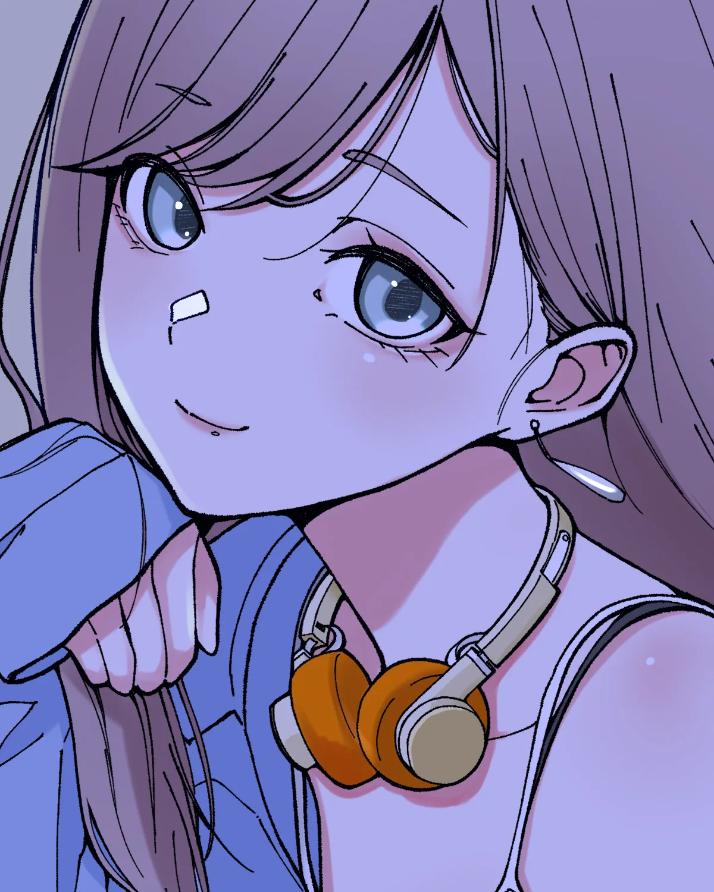
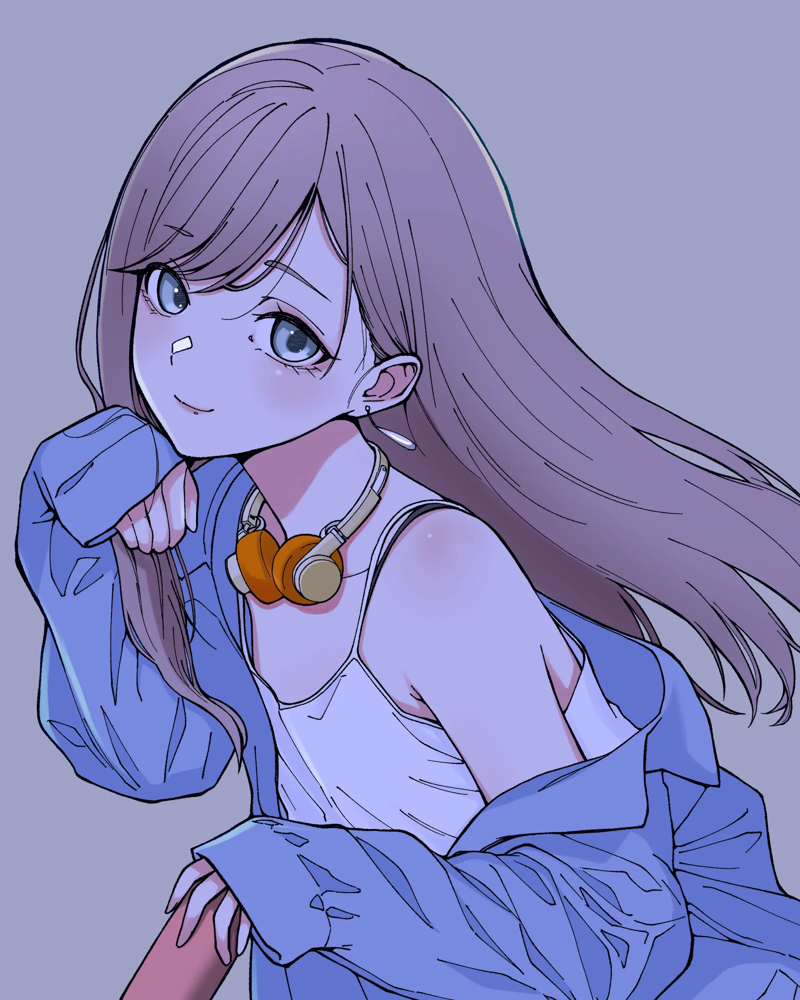

No.002
HEADPHONES GIRL
FIIO
EH11
Girls & night sounds.
01
Color
サイトは白と黒でつくり、色は作品が持つ。UIにアクセント色は置かない。色の値は tokens.css の :root にだけ書く。
- paper
- #FFFFFF
- 地
- ink
- #0E0E12
- 文字・罫線・黒の反転 白に対して 19.26:1
- ink-sub
- #62626C
- キャプション 白 6.03:1／mist 5.16:1
- mist
- #ECECF4
- 作品を並べる面 作品の背景色を白に20%
- art
- #9FA2C6
- 作品画像の背景だけ ink 7.76:1
- field
- #8A8A94
- フォームの枠 白 3.42:1
- rule-soft
- #D4D4DC
- 情報を持たない区切り線
- night-sub
- #A3A3AD
- 黒地の補足文字 ink 7.7:1
02
Typography
Works
Headphones
Headphones Girl
Headphones Girl No.001
Contact
Headphones GirlFIIO / EH11 Girls & night sounds.Works About Contact
音楽を聴く女の子を描く。
人物と表情、服装、音楽を聴いている時間を描く。
作品ごとに、描いたヘッドホンのメーカーと型番を掲載しています。制作のご依頼、PR、コラボレーション、作品の利用については、お問い合わせフォームからご連絡ください。
No.002 FIIO EH11 を描いた作品
03
Grid & Space
8pxグリッド。PC 12カラム（余白48・溝24）、TB 8カラム（32・24）、SP 4カラム（16・16）。キーボードの G か左下のボタンでグリッドチェッカーを重ねる。
space-14
space-28
space-316
space-424
space-532
space-648
space-764
space-896
space-9128
space-10192
space-11256
04
Signature
Asterisk
ロゴの「*」をそのまま使う。16・24・40・80・160px。1画面に3か所まで。


No.001No.002号数。シリーズをまたいだ通し番号で、一覧・詳細・SNSで共通
No.002
Headphones Girl


No.001
人物と表情、服装、音楽を聴いている時間を描く。
cutoutPosts
No.002 のショート動画と写真投稿を同じ枠で並べる。再生ボタンは枠の下に置き、プレーヤーの上に重ねない。角丸はこのブロックだけ。

05
Components
Filter
defaultお問い合わせ
hoverお問い合わせ
focus-visibleお問い合わせ
disabled送信中
linkView all works
link hoverView all works
About
Girls & night sounds.
NE0NNi（ネオンニ）は、音楽を聴く女の子を描くイラストレーションです。現在のシリーズは HEADPHONES GIRL。作品ごとに、描いたヘッドホンのメーカーと型番を記録しています。
黒の反転は1ページ1か所。見出しは1文字ずつ順不同で現れる。
06
Motion
- ease-outcubic-bezier(.16, 1, .3, 1)
- dur-1 / 2 / 3240ms（hover）／640ms（文字・画像の出現）／1200ms（重なった画像が揃う）
- Stack傾いた画像3枚が、画面に入ると1枚に揃う（05 の No.002）
- Chars見出しの文字が0〜600msの範囲で順不同に現れる（07 の About）
- Cableスクロールに合わせて線が描かれ、アスタリスクが線の上を進む（04）
- Reduced motionprefers-reduced-motion のときは動きを止め、完成した状態で見せる